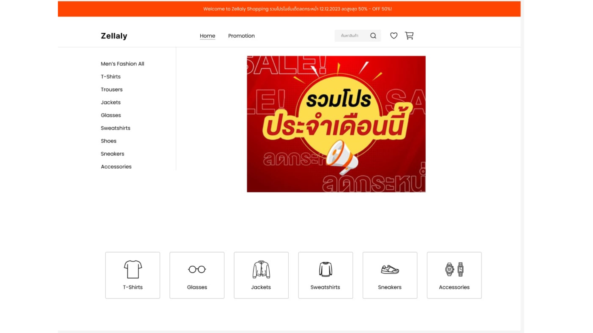
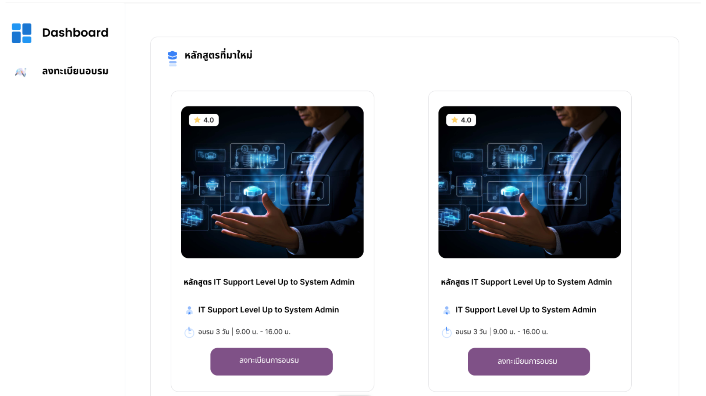
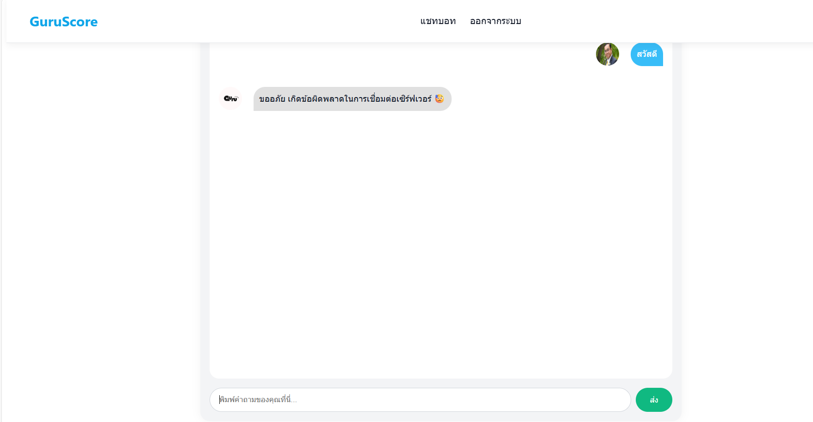

About Me
I am a Computer Science student with a strong passion for software development and continually learning new technologies. I am seeking an internship opportunity where I can apply my academic knowledge, gain valuable real-world experience, and contribute to meaningful projects in the IT field. My focus is on creating responsive, user-friendly interfaces.
Technical Skills
HTML — 80%
CSS — 80%
JavaScript — 70%
React — 75%
MongoDB — 80%
SQL — 80%
Docker — 50%
Git — 75%
Featured Projects

Zellaly E-commerce Shop
A modern e-commerce platform with responsive UI, focusing on clean design and user experience.
HTML, CSS, SQL

Reverse Course Website
A comprehensive training website designed to deliver engaging web development courses.
React, MongoDB, Docker

Chatbot Guruscore
An intelligent chatbot application leveraging modern large language models for interactive Q&A.
React, Python, Ollama3
Education
Bachelor of Science in Computer Science
Sripatum University — Present